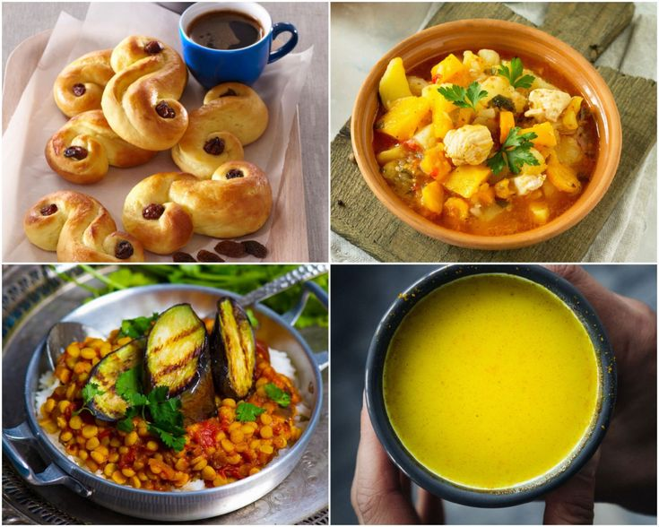

Orkaitėje keptos daržovės: šiltos ir spalvotos salotos ... Daržovės Rodoma 1–12 iš 17 Rūšiuoti pagal: Numatytasis rikiavimas Rikiuoti pagal populiarumą Rikiuoti nuo naujausių Rikiuoti pagal kainą (min → maks) Rikiuoti pagal kainą (maks → min)
Daržovės | Dėžėmis - vaisiai ir daržovės pigiau Daržovės – vienmečiai, dvimečiai ir daugiamečiai žoliniai augalai, kurių įvairios sultingos dalys vartojamos maistui. Mitybos prasme nuo daržovių skiriami vaisiai, kurie dažniausiai auga ant sumedėjusių augalų (medžių, krūmų, krūmokšnių) ir paprastai būna saldūs.
Daržovės, Daržovių patiekalai - Receptai | Patiekalai ORKAITĖJE KEPTOS DARŽOVĖS. 2 burokėliai, priklausomai nuo dydžio supjaustyti į keturias ar daugiau dalių 4 riekės moliūgo 4 morkos, perpjautos išilgai per pusę 2 pastarnokai, perpjauti ...
Daržovės - BARBORA Daržovės ir vaisiai Daržovės (8 5) 230 9309. Kasdien nuo 8 iki 21 val. El. p.: pagalba@barbora.lt. Daržovės ir vaisiai 215. Agurkai ir pomidorai 30; Paprikos ir baklažanai 14; Bulvės, morkos ir kopūstai 20; Svogūnai, porai ir česnakai 8 ...
Daržovės, vaisiai ir grybai | MAISTO PREKĖS | ShopTime.lt ... UAB Saldukas, amžina tradicija, visada pasiūlys įvairiausių prieskonių, prieskonių mišinių, prieskoninių žolelių, konditerijos žaliavų, džiovintų riešutų-vaisių ir daug kitų produktų iš Lietuvos ir viso pasaulio.
DARŽOVĖS - E-gulbelė Tel. +370 5 233 5340 info@auga.lt Nemokamas kokybės telefonas +370 800 11050 AUGA group, AB Konstitucijos pr. 21C, QUADRUM NORTH 08130 Vilnius
Daržovės – Skanaus! RECEPTAI, kurie įkvėps Jus gaminti! Čia jų rasite itin daug iš įvairiausių pasaulio šalių ir vietovių. Geri ir aiškiai aprašyti receptai, taip pat video receptai, kurie padės Jums pasigaminti ir ant stalo patiekti tik pačius skaniausius bei gardžiausius patiekalus! Geriausia vieta mėgstantiems gaminti.
Daržovės | Skelbimai | AgroLietuva.lt Daržovės – vienmečiai, dvimečiai ir daugiamečiai žoliniai augalai, kurių įvairios sultingos dalys vartojamos maistui. Mitybos prasme nuo daržovių skiriami vaisiai, kurie dažniausiai ...
daržovės - išsamiai DELFI.lt UAB Handelshus. Kodas: 221412030. PVM mokėtojo kodas: LT214120314. Naugarduko g. 102, 03160, Vilnius. Telefonas: +37068697707.
Daržovės | Dėžėmis - vaisiai ir daržovės pigiau
2020.10.29 08:07

Pagrindinis Parduotuvė Apie mus Kontaktai Taškų sistema Taisyklės Privatumo politika Daržovės ir vaisiai Daržoves Vaisiai Uogos Premium Bakalėja Džiovinti vaisiai Riešutai ir sėklos Kruopos ir ankštiniai Konservuota produkcija Arbatos Aliejai Saldumynai Prieskoniai Gėrimai Kita produkcija Naujausia produkcija Specialūs pasiūlymai 0 Pagrindinis 0 Žiūrėti krepšelį 0 Norų krepšelis Paskyra
Dėžėmis - vaisiai ir daržovės pigiau
Įsigykite vaisius ir daržoves didmenine kaina tiesiai į namus!
My Account My Account Checkout Checkout Wishlist Wishlist Daržovės ir vaisiai pristatomi tik Vilniuje, Kaune ir jų rajonuose! Sveiki Prisijungti Krepšelis (0 produktai) 0.00 € Jūsų krepšelis dar tuščias Viso: 0.00 € Susisiekite su mumis +370 612 99 600 Pagrindinis Parduotuvė Apie mus Kontaktai Taškų sistema Taisyklės Privatumo politika Pradžia Daržovės
Rodoma 1–12 iš 22
Avietiniai pomidorai, 2,5kg.
5.19 € Į krepšelį Akcija!
Avokadas didysis, 1 vnt (300-500g)
3.95 € 2.49 € Į krepšelį
Helouvyno moliūgas, 1 vnt
4.95 € Į krepšelį
Kalafijoras Romanesco, 1vnt
3.95 € Į krepšelį
Kopūstai, 10 kg
3.49 € Į krepšelį
Kriaušės ‘Conference’, 3 kg
3.95 € Į krepšelį Akcija!
Lietuviškos bulvės 6kg.
3.18 € 1.99 € Į krepšelį Akcija!
Lietuviškos bulvės, 15kg.
5.85 € 4.35 € Į krepšelį
Muskatinis moliūgas, 1 vnt
8.95 € Į krepšelį
Pievagrybiai, 3kg
6.99 € Į krepšelį
Plautos morkos, 10 kg
4.35 € Į krepšelį
Rauginti kopūstai, 800 g
1.69 € Į krepšelį 1 2
Produktų kategorijos
Daržovės ir vaisiai Daržoves Vaisiai Uogos Premium Bakalėja Džiovinti vaisiai Riešutai ir sėklos Kruopos ir ankštiniai Konservuota produkcija Arbatos Aliejai Saldumynai Prieskoniai Gėrimai Kita produkcija Naujausia produkcija Specialūs pasiūlymai
Filtruoti pagal kainą
Naujienlaiškių prenumerata
Prisijunkite prie dėžėmis.lt prenumeratų ir gaukite geriausius pasiūlymus skirtus tiktai Jums!
Informacija
Apie mus Taisyklės Privatumo politika Taškų sistema
X Mes naudojame slapukus (angl. cookies), kurie užtikrina, kad Jums bus patogu naudotis tinklalapiu. Jei toliau naršysite mūsų tinklalapyje, tai tolygu Jūsų sutikimui su slapukų naudojimu. Sutinku Privatumo politika